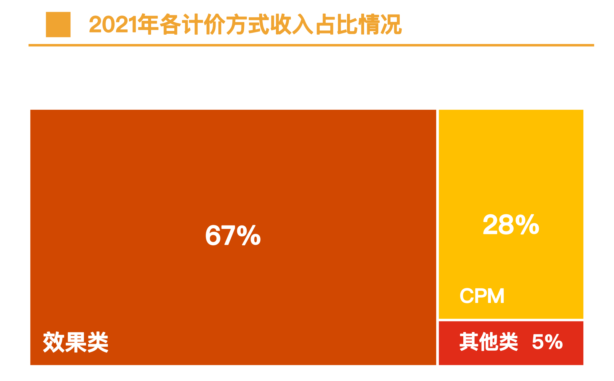
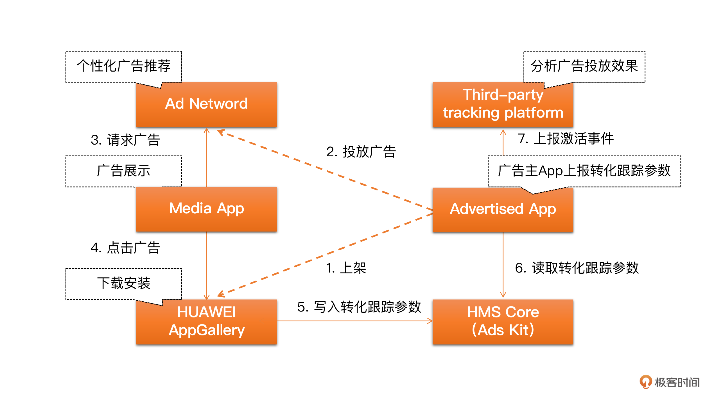
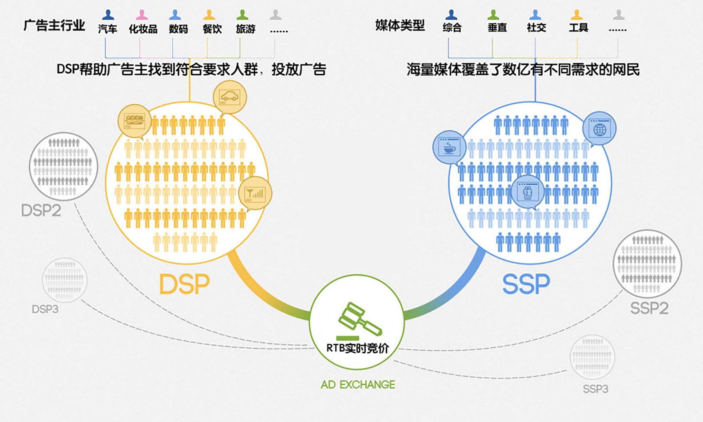
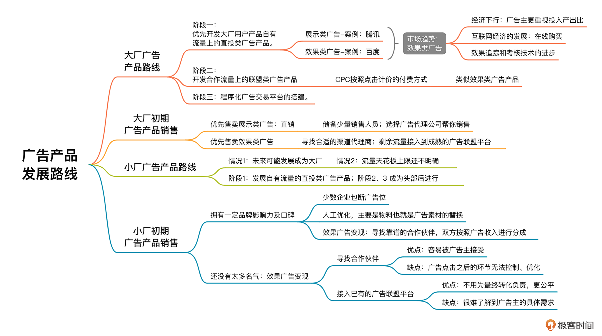

- 00 开篇词 作为一名互联网人，你为什么必须了解广告产品？.md.html
- 01 业务逻辑：广告产品的前世今生和商业模式是怎样的？.md.html
- 02 业务链条：广告主、媒体、第三方等分别如何看待广告产品？.md.html
- 03 头部玩家：从BAT到跳动的字节，广告产品有哪些变化与发展趋势？.md.html
- 04 产品体系：互联网大厂的广告产品存在哪些共性和区别？.md.html
- 05 变现模式：什么样的产品适合采用广告模式变现？.md.html
- 06 产品路线：大厂和小厂的广告产品发展路线有什么区别？.md.html
- 07 计价与效果（上）：如何制定合理的计价方式？.md.html
- 08 计价与效果（下）：如何制定合理的效果评估指标？.md.html
- 09 效果优化：如何一步步从提升曝光量深入到提升销量？.md.html
- 10 流量优化：如何兼顾广告收入和用户体验？.md.html
- 11 物料生产：如何满足广告主的创意需求？.md.html
- 12 精准定向：如何建立一个成熟的用户标签体系？.md.html
- 13 转化优化：互联网大厂如何利用算法优化广告效果？.md.html
- 14 程序化交易：程序化交易是否可以提升广告效果？.md.html
- 15 需求调研：广告产品潜在需求的调研流程是怎样的？.md.html
- 16 平台建设：如何从0到1建立一个完整的广告产品平台？.md.html
- 17 职业发展：新人入行，如何判断自己是否适合做广告产品？.md.html
- 18 团队建设：如何搭建一个高效的广告产品团队？.md.html
- 19 跨团队合作：产研团队和销售端、媒体端、市场端如何合作？.md.html
- 20 产品运营：不同发展阶段如何制定业务目标和运营策略？.md.html
- 21 广告产品彩蛋：课程答疑与推荐书目.md.html
- 结束语 你想要成为什么样的互联网广告产品人？.md.html
- 捐赠
06 产品路线：大厂和小厂的广告产品发展路线有什么区别？
你好，我是郭谊。
在上一讲中，我们分析了什么样的企业适合采用广告产品作为首选的变现模式，主要包含用户规模、可以实现用户体验与广告收入的平衡、拥有较高的流量天花板这三个要素。你可以根据这三个要素去判断现阶段企业是否适合开始进行广告变现。一旦判断出当前阶段企业需要开始着手开发广告产品来进行变现的时候，我们就应该提前了解广告产品发展过程的各个阶段的准备工作。
虽然广告变现的模式是一样的，但是各个公司的广告产品发展路线却不尽相同，尤其是大厂和小厂在广告产品发展路线的选择上，有很大区别。你需要根据企业的实际情况去作出正确、恰当的选择。
大厂的广告产品发展路线
我们先来讲讲大厂广告产品的发展路线，大厂发展广告产品的时候有哪些特点呢？
- 拥有了成功的用户产品，日活较高，所以也拥有比较高的广告可用流量。
- 在用户和广告主侧都具有了一定的品牌认知度，推出的广告产品容易被广告主认可。
大厂在供给侧已经具备了优势，所以广告产品的工作重点在于怎么充分利用流量价值，找到合适的广告主买家。
总的来说，我们可以把大厂的广告产品发展路线分成三个阶段：
第一阶段：开发自有流量上的直投类广告产品
我们在第4讲产品体系中分析过：大厂的广告产品体系可以分为自有流量上的广告产品，以及外部合作流量上的广告产品。因为大厂的自有流量是它的核心优势，所以应该优先对这部分流量进行广告变现。
所谓直投类广告产品，指的是在大厂自己的投放平台进行投放的广告产品。因此，一定要尽早构建自己的广告投放平台，这样才能快速地建立起自己的广告产品投放体系。
第一阶段的自有流量上的直投类广告产品主要包含展示类广告和效果类广告两种。
展示类广告：指主要满足广告主品牌推广或者其他高曝光量需求的广告产品，一般尺寸较大，位置明显。例如腾讯的微信朋友圈广告、阿里的品牌特秀、百度的品牌专区、字节的抖音开屏广告等。
效果类广告：指主要满足广告主效果转化需求的广告产品，转化事件由广告主定义，包括App的下载及激活、用户参加活动、购买商品等。这类广告形式多样，位置不限，例如腾讯的微信公众号底部广告、阿里的淘宝直通车、百度的搜索广告、字节的抖音DOU+等。
针对展示类广告和效果类广告这两种不同类型的广告产品，大厂在建设广告投放平台方面有着不同的发展路线。有的先发展了展示类广告产品，有的先发展的是效果类广告产品。那我们应该先开发哪一类产品呢？这里我想先跟你分享两个典型案例。
第一个案例来自腾讯广告。腾讯优先开发了展示类广告，之后才开发了效果广告。腾讯做媒体的时候，开发出了一些具有媒体性质的用户产品，其中包括综合性门户网站腾讯网、长视频平台腾讯视频，这些用户产品都比较适合使用展示类广告进行变现，例如腾讯网首页的banner、腾讯视频里的视频贴片等等。在展示广告产品体系趋于成熟之后，腾讯又根据自身广告产品体系的发展情况把重点转向了效果广告，开始加大对于效果广告产品的投入，广告产品的收益有了整体提升。
第二个案例来自百度。百度优先开发了效果类广告，之后才开发了展示类广告。因为百度是从搜索引擎这个工具产品起家的。搜索引擎的特点是通过用户键入关键词，可以清晰地捕捉到用户的意图，所以百度在以效果转化为目标的广告产品上具备天然的优势。
在百度搜索已经具备了相当的流量与日活之后，百度首先推出了效果类广告产品——百度搜索关键词广告，并取得了巨大的成功。后来，百度为了满足品牌广告主的品牌曝光和公关保护需求，又推出了展示类广告产品品牌专区。
所以，通过以上两个案例，我们知道其实对于大厂来说，在自有流量上，优先开发展示类广告产品，还是优先开发效果类广告产品，没有统一的标准答案。这要根据用户产品的性质和特点来决定。
虽然我们可以决定优先发展哪一类广告产品，但从目前市场趋势来看，二者并不是平分秋色的，天平已经开始向效果广告倾斜了。据统计，2021年效果类广告已经占据了67%的市场份额，远超展示类广告产品。这是为什么呢？

原因有三：
其一，经济下行，导致广告主更加重视广告预算的投入产出比。除了行业报告数据，我们这些从业人员也能从广告主所提的需求变化中发现这一点。当年我在百度的时候，汽车行业的高档品牌原本是非常典型的品牌广告主，主要购买展示类广告。但是，原本不要求考核的奔驰却提出了点击效果上的期待。
其二，互联网经济的发展，催生出了很多新兴行业，比如电商、互联网金融等等，用户可以在线完成购买转化，这些行业从一开始就很在意线上广告的效果转化。
其三，效果追踪和考核技术的进步。原先，只有媒体的广告平台可以监测到每个用户的广告曝光和点击链路。而现在，只要广告主同意，就可以通过SDK或者API和媒体的广告平台对接，获得每个用户从广告曝光到效果转化全链路的追踪数据。

在第一阶段发展自有流量的直投类广告产品时，你还要注意一点，展示类广告一般是针对数量有限的大型广告主，单笔投放预算较高，投放平台一般是代理型的，即由媒体平台内部的广告投放团队代为投放和操作。效果类广告投放平台因为要服务成千上万的大、中、小广告主，所以一般是自助型的，由广告主或者为其服务的广告代理公司进行预算充值、广告设置、广告投放和广告优化操作。
第二阶段：开发合作流量上的联盟类广告产品
联盟类产品是以外部合作流量为主的聚合类广告产品。这些合作流量方的性质多种多样，可以是App、手机厂商、智能电视大屏、户外电梯广告等等。典型的成熟联盟类广告产品包括腾讯的优量广告、字节跳动的穿山甲、百度的百青藤、阿里的淘宝联盟等。
联盟类广告产品因为主要以CPC按照点击计价的付费方式为主，所以一般被看作是效果类广告产品，和自有流量上的效果广告一样，通过自助投放平台进行售卖。因为这两种广告产品的计价形式和售卖方式差不多，所以在设计的时候，我们可以把它们都放在自主投放平台里，便于管理。
和自有流量上的直投类产品相比，联盟类广告产品的一大特点是供给侧需要引入外部合作流量，所以需要专门成立一支商务团队负责这方面的工作。百度联盟每年还会针对外部合作流量主召开百度联盟峰会，以推动后续更大规模的合作。其他大的联盟类广告产品平台也有类似的市场活动。
联盟类广告产品不仅可以增加大厂供给侧的流量供给，还可以为大厂争取更多的广告预算。
第三个阶段：搭建程序化广告交易平台
大厂在自有流量上的直投广告和外部合作流量为主的联盟类广告这两类产品逐渐完善之后，会启动程序化广告交易平台的搭建。
程序化广告交易平台是基于实时竞价技术的广告交易平台类产品，主要涉及实时竞价这个关键技术以及三个基本的平台，分别是服务于广告主和广告代理公司的DSP、服务于媒体方的SSP以及连接两个平台的ADX，也会涉及一些其他的产品，例如DMP（数据管理平台）、Trading Desk（采购交易平台）等等。
和联盟类广告产品一样，程序化广告交易平台ADX 比较适合大厂做，因为大厂可以用被自有流量吸引来的广告主资源来撬动程序化广告交易平台上的广告售卖。

为什么大厂的广告产品发展路线会分成以上三个阶段呢？
这是因为自有流量是大厂的独占资源，基于自有流量的直投式广告是大厂最有可能跟广告主进行议价，来快速提升收入的广告产品。有了一定的广告主客户以后，商务团队再出去谈合作流量才有可能。而程序化交易广告之所以放在最后发展，一方面原因是涉及的角色众多，商务谈判和接入流程相对复杂，另一方面也是由于技术开发难度和服务器成本相对较高。
大厂初期广告产品销售
关于大厂的广告产品发展路线，你还需要对产品销售做一些了解。最初的广告产品销售是基于自有流量上的直投广告产品开始的，如果你决定优先售卖展示类广告，最好采取直销，有两条路径可选：
招聘少量的甚至是个位数的销售人员，最好是有一定的广告销售经验，有一定的大客户广告主资源的销售。让他们联系广告主和广告代理公司，直接销售你们的广告产品。
选择一家靠谱的，最好有一定广告主客户资源的广告代理公司，请他们帮你进行销售。豆瓣、知乎早期都是采取这种方式。这种方式的优点是，因为你已经有相当规模的用户量和一定的品牌口碑，所以很快就会有广告收入流水。但是，要注意的是，不要因此放缓了发展自己的广告产品及建立自己的销售团队的步伐，否则很可能会错失广告变现的第一桶金。
如果你优先售卖效果类广告，可以考虑结合以下两种方式：
寻找合适的渠道代理商。渠道代理商指的是外部的销售合作伙伴。例如今日头条App，因为它属于新闻资讯类产品，所以和传统的报刊媒体具有一定的相似性，字节跳动就在全国各地找了一批报刊媒体的代理商，让他们代理今日头条在当地的信息流广告。这些渠道代理商在原有的报刊媒体广告之外，为他们的广告主客户提供了线上的广告资源，实现了字节跳动、渠道代理商和广告主三方的共赢。
为了进一步增加效果类广告的售出率，你可以把剩余流量接入到成熟的广告联盟平台。这些广告联盟平台拥有大量的广告主客户，所以你也可以和他们的合作，通过简单的广告投放代码嵌入或者投入有限的技术对接，快速启动广告变现。
总的来说，大厂的广告产品发展路线是沿着这三个阶段发展成熟的，在初期的产品销售上则可以根据具体情况有多种选择。-
小厂的广告产品发展路线
小厂，在这里指的是用户量和日活还比较少的用户产品平台。小厂有两种情况，第一种是拥有较高的流量天花板，未来可能发展成为大厂，打算尽早开始尝试广告变现；第二种则流量天花板上限较低，但是在对于各种商业化变现模式的摸索中，也想探探广告产品这一条明路。
小厂与大厂的区别
小厂的广告产品发展路线，可以参考我前面说的大厂发展路线中的第一阶段，先发展基于自有流量的直投类广告产品。和大厂的区别在于，如果你的用户产品已经具备一定的品牌影响力及口碑，无论你是否是媒体性质较强的用户产品，都可以优先开发展示类广告产品，例如移动端App的开屏广告。因为这类广告产品主要是销售驱动的，你只要找到少数有实力的广告主就可以。如果还不具备影响力，我建议你优先考虑开发效果类广告产品。
至于联盟类广告产品和程序化广告交易平台，我建议你慎重考虑。因为最初阶段我们应该先集中精力建设好自己在自有流量上的直投产品。如果未来你的流量增长很快，等有了头部用户产品的苗头再去做也不迟。到时候可以参考我前面说的大厂广告产品发展路线的第二和第三阶段。如果发现广告变现这条路有瓶颈，及早探索和发展其他商业化变现模式为妙。
小厂初期广告产品销售
在产品销售方面，拥有一定品牌影响力及口碑的小厂，如果决定优先发展展示广告产品，早期适合直接联系少数广告主，或者聘用一家靠谱的广告代理公司进行变现。就像我在第5讲中提到过的财经资讯和社区类平台——雪球，在尝试开始进行广告变现的初期就是如此。这种情况下，我对于你有以下建议：
找少数企业包断广告位，更能保障稳定的收入，而且可以选择和你相匹配的广告主，至少不要让广告主影响你的品牌形象。例如，游戏行业的广告主，就不是很符合财经资讯和社区类平台的气质，是雪球这样的平台需要规避的。
广告效果初期可以进行人工优化，具体的优化方向主要是物料也就是广告素材的替换。因为小厂一般还没有开始建立用户标签体系，所以我们无法使用精准定向技术。
如果我们的用户产品还没有太多名气，那我们可以尝试用效果广告变现，有两条路径可选：
路径一
选择一个靠谱的合作伙伴，由合作伙伴帮你进行广告变现，双方按照广告收入进行分成。这种情况下，合作伙伴为你选择的广告主一般都是效果广告主，而且他们会和这些广告主按照CPS等最终转化效果进行结算，之后再和媒体平台进行第二次的分成结算。选择这条路径，有优点也有缺点。
- 优点：这种方式更容易被广告主尤其是效果广告主所接受，因为广告主在你这里得到的广告曝光和广告点击都是免费的，只要为最终转化付费就行。
- 缺点：就像我在第2讲中提到过的一样，如果从广告曝光到最终转化的这条闭环，不是完全在你的媒体平台上实现的，那么，媒体平台就无法为最终转化效果负全责。所以，这种情况下，广告点击之后的环节你是无法控制和优化的，很难进一步提升你的广告产品单价。
路径二
选择接入已有的广告联盟平台，由广告联盟平台代为变现并得到分成。因为移动广告市场竞争激烈，所以对于合作方最高可以提供100%的分成，甚至还有其他激励，分成最低也能达到70%以上。选择这条路径，同样也是优缺点并存。
- 优点：这些大的广告联盟平台一般都是BAT、字节这样的头部媒体，或者实力强大的广告技术公司搭建的，所以已经拥有一定规模的广告主客户，相对来说话语权较强，一般都按照广告曝光量产生的实际收入进行分成，所以你不用为最终转化负责，相对来说更公平一些。
- 缺点：广告变现的绝大部分过程都掌握在广告联盟平台手中，你很难了解到广告主也就是广告客户端的具体需求，而这些需求，是帮助你改进你的广告产品的重要线索。
无论是选择以上哪种路径，你都要记住：这个阶段只是帮助你在行业实践中了解广告产品，了解自身广告变现潜力的一个实验阶段而已。未来，或早或晚，你还是要选择搭建自己的广告产品平台，把广告变现的主动权和数据掌握在自己手中。
重点回顾
在这一讲中，我们分别对大厂和小厂的广告产品发展路线做了阐述，可以发现因为大厂拥有流量较大的用户产品，所以推出的广告产品也相对不愁卖，所以他们应该朝着这两个方面努力：
- 尽量获取更高的广告单价，争取达到市场上同类竞品的价格。因此，大厂在产品层面，要优先建立基于自有流量的直投类广告产品，把定价话语权掌握在自己手中，后续再建设基于合作流量的联盟类广告产品，以及较为复杂的程序化广告交易平台。
- 快速找到广告主客户，开始广告变现的实践。因为大厂的广告比较容易被广告主认可和接受，所以只要找到靠谱的销售人员、广告代理公司，或者匹配度高的渠道代理商，就能快速启动。
小厂因为流量较低，所以他们应该：
- 先集中精力建设基于自有流量的直投类广告产品，同时，可以把剩余流量接入成熟的广告联盟平台，增加广告变现收入。
- 关注自身用户产品的流量发展趋势，如果预计流量天花板较低，要同步探索其他商业化变现模式；如果流量增长迅速，可以在后续阶段追随大厂的广告产品发展路线。

实战演练
这一讲中，我详细地介绍了大厂、小厂广告产品的发展路线及初期产品销售策略。请你选择一个你感兴趣的平台（比如抖音、微信、闲鱼等等），绘制它的广告产品发展路线图。
最后，期待你的分享，有任何问题欢迎在评论区讨论，也欢迎你把这节课分享给需要的朋友，我们下节课再见！
© 2019 - 2023 Liangliang Lee. Powered by gin and hexo-theme-book.